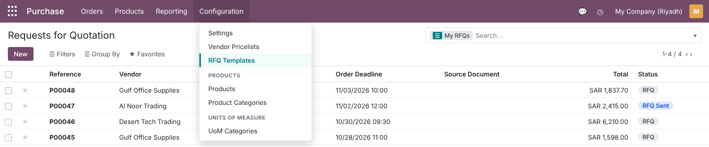
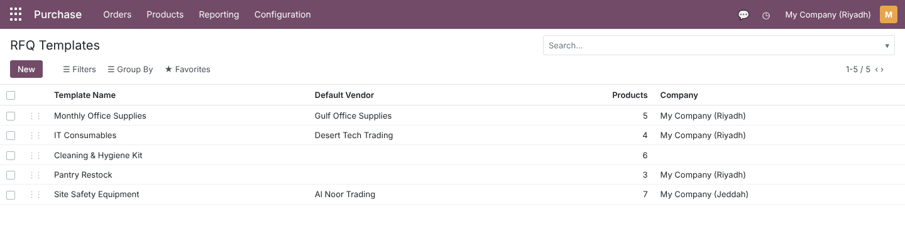
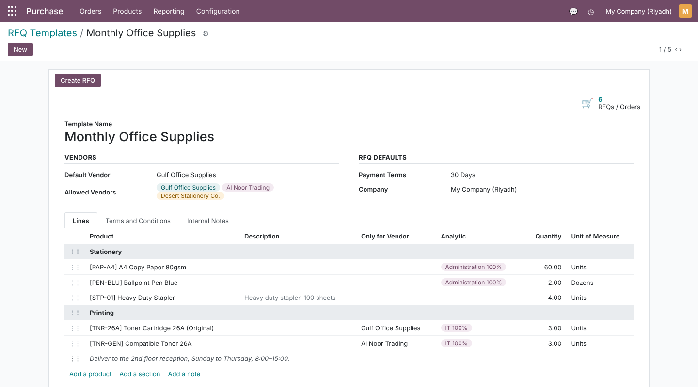
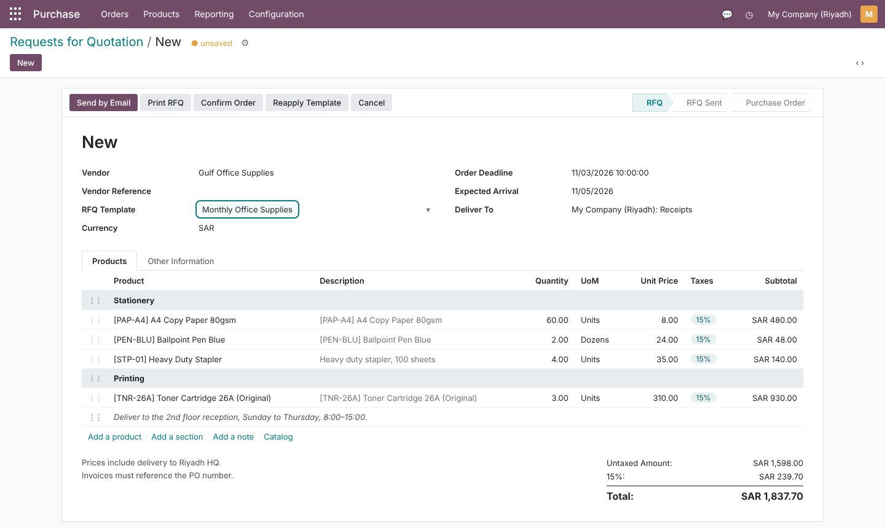
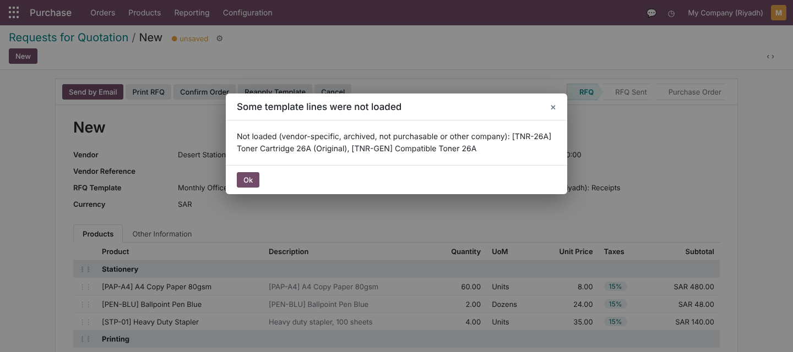
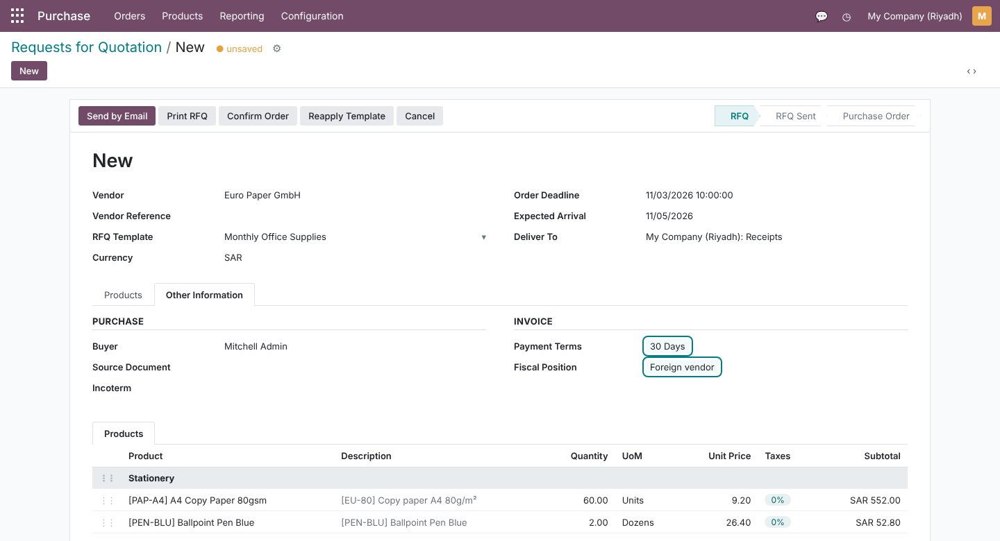
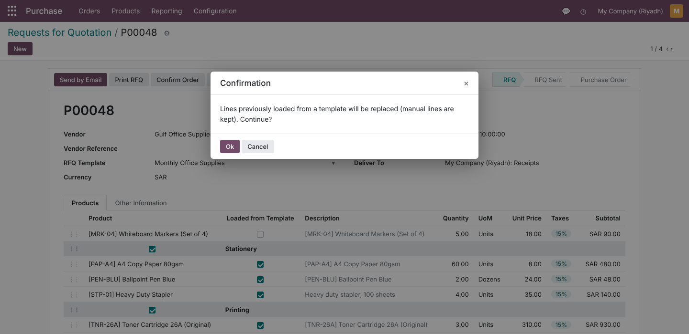
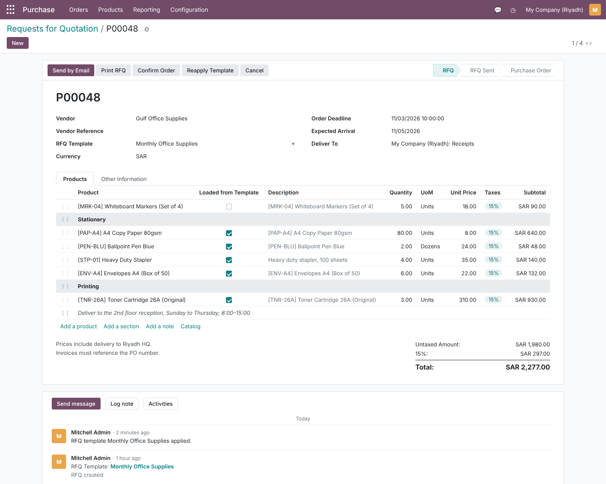
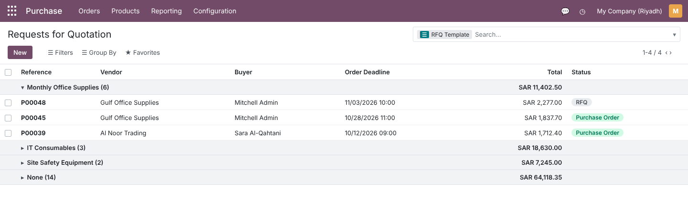
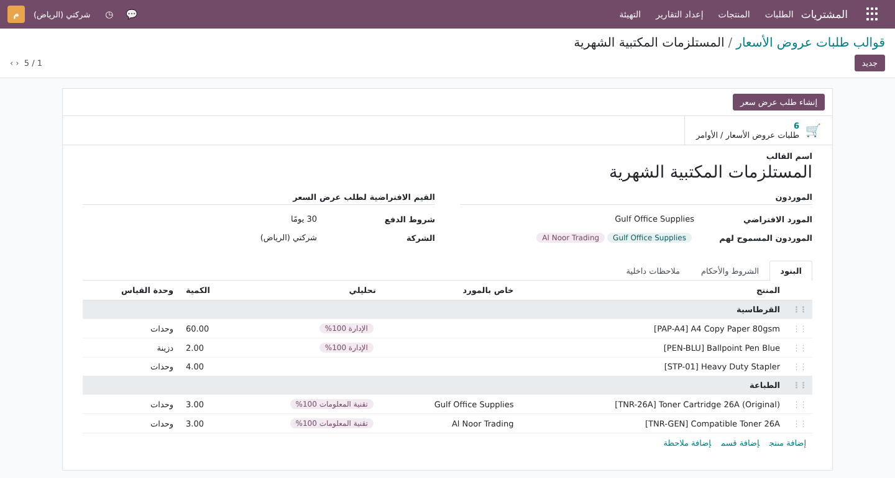

Save the products, quantities, units of measure, sections and notes you buy again and again, and load them into any RFQ in one click. Prices, taxes and analytic accounts are computed by Odoo’s own purchase engine, exactly as if the buyer had typed each line.
Recurring purchases (office supplies, consumables, safety kits, pantry restocks) follow the same list every time. Standard Purchase has no reusable shopping list for RFQs.
Four steps from a recurring list to a priced RFQ.
Screenshots use demo data: My Company (Riyadh) in SAR with a 15% purchase tax, the vendors Gulf Office Supplies, Al Noor Trading, Desert Stationery Co. and Euro Paper GmbH, and a Monthly Office Supplies template.
Purchase › Configuration › RFQ Templates, next to Vendor Pricelists. On the RFQ itself the module adds the RFQ Template field and the Reapply Template button.

Order templates by drag and drop, see the Default Vendor, the number of Products and the Company. Leave the company empty to share a template between all companies. Search by name, vendor or product, filter Archived templates and group by Default Vendor or Company.

The Lines tab works like an RFQ: Add a product, Add a section, Add a note. Each product line has a Quantity, a Unit of Measure (any unit of the product’s category, e.g. Pens bought by the Dozen), an optional Description override, an Analytic distribution and an optional Only for Vendor. The Vendors and RFQ Defaults groups hold the default vendor, allowed vendors and payment terms; Terms and Conditions and Internal Notes have their own tabs.

Choose the RFQ Template on the RFQ and the lines appear before you save. Each line replays the standard product selection, then sets the template’s unit of measure and quantity, so Odoo picks the right vendor price tier, converts units and currency, maps taxes through the fiscal position and applies analytic distribution models. The vendor’s product code and name are used as the description unless the template overrides it.

A line with Only for Vendor loads only when the RFQ vendor (or its parent company) is that vendor, so the original toner goes to Gulf Office Supplies and the compatible one to Al Noor Trading. Lines that are skipped (another vendor’s line, an archived or non-purchasable product, a product with a blocking purchase warning, or a product of another company) are listed in a warning in the form, or in the chatter when you reapply.

The template fills the Vendor, Payment Terms and Terms and Conditions only when the RFQ has none. When the template sets the vendor, Odoo’s normal vendor cascade runs: here Euro Paper GmbH brings its Fiscal Position (15% mapped to 0%) and, having no purchase payment terms of its own, keeps the template’s 30 Days.

| On the RFQ | What the template does |
|---|---|
| Vendor | Set to the Default Vendor only if empty; must be one of the Allowed Vendors when they are set |
| Payment Terms | Copied only if empty; a vendor’s own purchase payment terms take priority |
| Terms and Conditions | Copied only if empty |
| Lines added by hand | Always kept |
| Lines from a template | Replaced by the current template lines |
Changed the template after the RFQ was created? Click Reapply Template on any RFQ in RFQ or RFQ Sent state. Lines marked Loaded from Template are replaced; lines you added yourself, like the whiteboard markers below, stay. Applying twice gives the same result, and the chatter records it.


Search RFQs by RFQ Template or use Group By › RFQ Template to compare spend per list. On the template, the RFQs / Orders smart button opens the same list, and Create RFQ opens a new RFQ already loaded with the template and its default vendor. Template changes on an RFQ are tracked in the chatter.

Every label, button, help text, warning and error message ships in Arabic, using the wording of Odoo’s official Arabic Purchase translation. Template names and terms are translatable fields, so one template can carry both languages.

The situations that usually break purchase templates, and what the module does in each.
skip_purchase_template_apply turns this off).Uses the standard Purchase groups; no new groups to configure.
| Who | Can |
|---|---|
| Purchase / User | Read templates, select them on RFQs and use Reapply Template |
| Purchase / Administrator | Create, edit, archive and delete templates; access the Configuration menu |
| Multi-company (record rules) | Users see shared templates and those of their allowed companies only |
Small footprint, standard APIs, no core overrides of pricing logic.
| Odoo version | 16.0, Community and Enterprise |
| Depends on | purchase |
| Python dependency | None |
| Menus | Purchase › Configuration › RFQ Templates |
| Models | purchase.order.template, purchase.order.template.line; extends purchase.order (RFQ Template) and purchase.order.line (Loaded from Template) |
| Automated tests | 25 TransactionCase tests: form loading, price tiers and UoM, fiscal positions and taxes, analytics, vendor rules, reapply and idempotency, archive states, multi-company and access rules |
| Translations | Arabic (ar), plus a .pot template for other languages |
| License | LGPL-3 |
Questions, a demo, or an adaptation to your own process? Get in touch.
✉ ibrahim.yahiah@gmail.com LinkedIn: Ibrahim YahiaAuthor: Ibrahim Yahia · License: LGPL-3